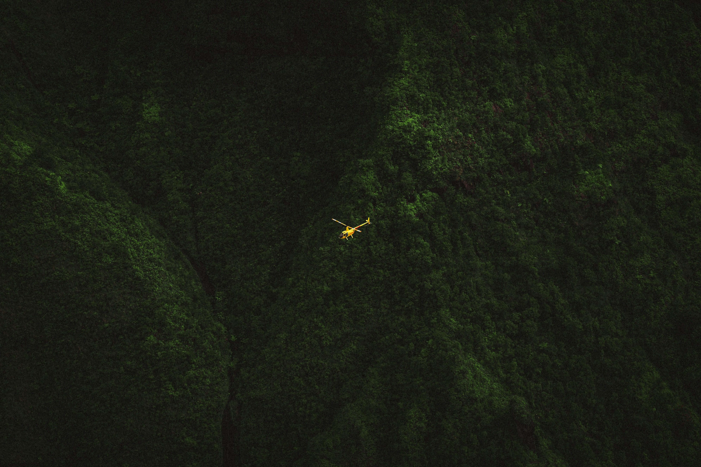

이화뉴스
-
본교, 국제이주기구와 이주 정책 공동 연구 및 인재양성을 위한 업무협약 체결
본교는 4월 26일(수) UN 전문기구인 국제이주기구(International Organization for Migration, 이하 IOM)와 업무협약(MOU)을 맺고, 이주 정책 분야에서의 공동연구를 위해 협력하기로 했다. 김은미 총장과 IOM 한국대표부 Steven Hamilton 대표 IOM은 UN 내 이주 분야를 담당하는 기구로, 정기적이고 안전하며 질서 있는 이주를 촉진하기 위해 △이주 관리 △위기 대응 △국제협력 및 파트너십 △데이터 분석 및 연구 등 다양한 활동을 펼치고 있다.
2023.05.02 1219 -
중간고사 기간 ‘든든한 이화사랑’ 개최
중간고사 준비하는 학생들에 든든한 아침식사 제공 학생처(처장 백은미)는 중간고사 기간인 4월 19일(수)~21일(수) 3일간 재학생들에게 아침식사를 제공하는 ‘든든한 이화사랑’ 프로그램을 진행했다. 시험기간 학업에 지친 학생들을 응원하기 위해 3일간 매일 오전 8시 30분부터 1시간 동안 헬렌관 식당에서 죽, 빵 등의 메뉴로 구성된 아침식사를 무료 제공하는 ‘든든한 이화사랑’은 2006년 도입 이후부터 학생들에게 큰 호응을 받아왔다.
2023.04.28 2814 -
2023학년도 이화 스승 추모예배 개최
이화의 스승들을 기리고 참된 이화정신을 기리는 추모 예배가 4월 18일(화)에 개최됐다. 본교는 이화 창립의 달 5월을 앞두고 양화진 외국인 선교사 묘원과 가평 이화수목원을 찾아 한국 최초의 여성 교육기관으로 시작해 최고의 고등교육기관으로 성장하기까지 사랑과 헌신을 아끼지 않은 선생님들을 추모하고 있다. 먼저 '양화진 이화 스승 추모 순례'가 양화진 외국인선교사묘원에서 진행됐다. 코로나19로 인한 묘원 출입 통제가 해제됨에 따라 4년 만에 개최
2023.04.25 4016 -
식품영양학과 2개 사업단 식약처 출연연구개발사업 선정
고광석 교수팀, 기능성 원료 등 중복/병용 섭취 안전성 예측기술 개발·적용 권오란 교수팀, 빅데이터 기반 개인 맞춤 적정 섭취 평가기술 개발·적용 식품영양학과 고광석 교수팀과 이화여대기술지주회사 ㈜로그미(대표 권오란 교수)가 2023년 제1차 식품의약품안전처 출연연구개발사업 ‘스마트식품 안전관리, 빅데이터 기반 건강기능식품 등 적정 섭취 기반 구축’을 위한 세부사업에 각각 선정됐다. 고광석 교수, 권오란 교수 고광석 교수팀은 2027년까지 5년간
2023.04.24 4082 -
'김옥길 기념관' 유증 감사 행사 갖고 故 김동길 박사 뜻 기려
(왼쪽부터) 김은미 총장, 김옥영·김수옥 선생, 장명수 이사장 본교는 ‘김옥길 기념관’과 자택을 학교법인 이화학당에 기부하신 故 김동길 박사의 유가족을 초청, 감사의 마음을 전했다. 4월 12일(수) 총장공관에 마련된 이날 오찬 모임에는 이화학당 장명수 이사장, 김은미 총장과 김동길 박사의 동생인 김옥영 동창(음악·59년졸), 김수옥 동창(생미·82년졸), 그리고 방송인 김동건 씨와 이성순 명예교수, 안정환 선생 등이 참석했다. 본교 제8대 총장 김옥길 선생님
2023.04.21 4078 -
제34회 Faculty Noon Concert : 4월의 노래
음악대학(학장 박신화)은 4월 19일(수) 정오 중강당에서 'Faculty Noon Concert'를 개최했다. 2010년 시작해 34회를 맞이한 ‘Faculty Noon Concert’는 점심시간을 활용해 다양한 장르의 공연을 즐길 수 있는 정오의 작은 음악회다. 규모는 작지만, 특색있는 테마의 프로그램, 본교 교수진 및 전문가의 수준 높은 공연, 재미있고 풍부한 해설 등이 어우러져 이화가족에게 많은 사랑을 받고 있다. 신록의 4월을 맞아 음악대학은 ‘4월의 노래(Song of April)’를 주
2023.04.19 4636 -
<2023 이화 국제 심포지엄> 인공지능 챗GPT 시대의 젠더혁신적 뇌과학연구
챗GPT를 비롯한 빅데이터 기반의 생성형 인공지능(AI)에 대한 관심이 집중되고 있는 가운데, 뇌과학 연구 분야의 인공지능 활용 사례를 살펴보고 미래 비전을 전망하는 <2023 이화 국제 심포지엄>이 4월 12일(수) ECC 이삼봉홀에서 개최됐다. 본교 인공지능융합혁신인재양성센터(소장 최병주)와 BK21 FOUR 시스템헬스융합전공(단장 권오란)이 주관하고, 이화의료원 ER 바이오코어사업단(단장 유경하)이 주최한 이번 행사에는 공과대학·신산업융합대학·
2023.04.17 9211 -
본교, 3단계 ‘무크 선도대학’ 선정
교육부 주관 ‘무크 선도대학’ 1·2단계에 이어 3단계 선도대학으로 연속 선정 전통적 특화분야 및 신산업/신기술 융합 분야 강좌 개발 본교는 4월 12일(수) 교육부가 발표한 ‘3단계 무크 선도대학’에 선정됐다. 2015년 1단계, 2020년 2단계 사업에 이어 이번 3단계 무크 선도대학에 선정되며 강좌 개발 역량과 인프라의 우수성을 인정받았다. ‘3단계 무크 선도대학’에 최종 15개교가 선정된 가운데 본교는 향후 3년간 사회과학, 교육, 법률, 약학, 전기·전자 등 분야
2023.04.14 4790 -
 최재천 초빙석좌교수 ‘제17회 포스코청암상’ 수상
최재천 초빙석좌교수 ‘제17회 포스코청암상’ 수상자연과학대학 생명과학전공 최재천 초빙석좌교수가 4월 5일(수) 제17회 ‘2023 포스코청암상’을 수상했다. 포스코청암재단은 포스코 창업이념인 창의·인재육성·희생·봉사 정신에 대한 국민적 관심과 참여를 확산시켜 국가발전에 기여하고자 2006년 ‘포스코청암상’을 제정했다. 과학·교육·봉사·기술 4개 부문에서 4명의 수상자를 선정하는 청암상은 권위와 상금 면에서 호암상, 경암상과 더불어 3대 학술상으로 꼽힌다. 최재천 교수는 창의적인 교육프로그램
2023.04.11 5018 -
교육공학과 창립 60주년 기념행사 개최
사범대학 교육공학과는 창립 60주년을 맞아 3월 31일(금) ECC 이삼봉홀에서 ‘교육공학과 창립 60주년 기념행사’를 개최했다. 1963년 설립된 교육공학과(구. 시청각교육과)는 학부로는 세계 최초로 설립되어 교육테크놀로지(Educational Technology, ET)를 연구·교육하며 3,500여 명이 넘는 학·석·박사 졸업생을 배출했으며, 교수-학습이론과 교수법, 첨단 테크놀로지의 현장 적용을 통해 우리나라 교육의 질과 효율성을 향상시켜 왔다. 창립 60주년을 맞아
2023.04.07 4991